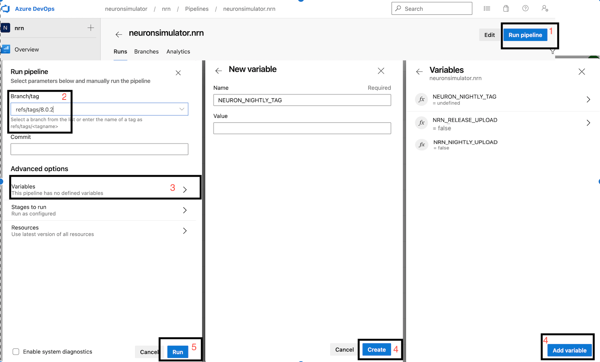

Building Python Wheels
Linux wheels
In order to have NEURON binaries run on most Linux distros, we rely on the manylinux project.
Current NEURON Linux image is based on manylinux2014.
Setting up Docker
Docker is required for building Linux wheels. You can find instructions on how to setup Docker on Linux here.
NEURON Docker Image Workflow
When required (i.e. update packages, add new software), NEURON maintainers are in charge of updating the NEURON docker
images published on Docker Hub under:
Azure pipelines pull this image off DockerHub for Linux wheels building.
Updating and publishing the public images are done by a manual process that relies on a Docker file
(see packaging/python/Dockerfile and packaging/python/Dockerfile_gpu).
Any official update of these files shall imply a PR reviewed and merged before DockerHub publishing.
All wheels built on Azure are:
- Published to
Pypi.orgasneuron-nightly-> when the pipeline is launched in CRON modeneuron-x.y.z-> when the pipeline is manually triggered for releasex.y.z- additionally, for Linux only:
neuron-gpu-nightlyandneuron-gpu-x.y.z
- Stored as
Azure artifactsin the Azure pipeline for every run.
Refer to the following image for the NEURON Docker Image workflow:

Building the docker image
After making updates to any of the docker files, you can build the image with:
cd nrn/packaging/python
# update Dockerfile
docker build -t neuronsimulator/neuron_wheel[_gpu]:<tag> .
where <tag> is:
latest-x86_64orlatest-aarch64for official publishing on respective platforms (after merging related PR)feature-namefor updates (for local testing or for PR testing purposes where you can temporarily publish the tag on DockerHub and tweak Azure CI pipelines to use it - refer toJob: 'ManyLinuxWheels'orJob: 'ManyLinuxGPUWheels'in azure-pipelines.yml )
and _gpu is needed for the GPU wheel.
If you are building an image for AArch64 i.e. with latest-aarch64 tag then you additionally pass --build-arg argument to docker build command in order to use compatible manylinux image for ARM64 platform (e.g. while building on Apple M1 or QEMU emulation):
docker build -t neuronsimulator/neuron_wheel:latest-aarch64 --build-arg MANYLINUX_IMAGE=manylinux2014_aarch64 -f Dockerfile .
Pushing to DockerHub
In order to push the image and its tag:
docker login --username=<username>
docker push neuronsimulator/neuron_wheel[_gpu]:<tag>
Using the docker image
You can either build the neuron images locally or pull them from DockerHub:
$ docker pull neuronsimulator/neuron_wheel
Using default tag: latest
latest: Pulling from neuronsimulator/neuron_wheel
....
Status: Downloaded newer image for neuronsimulator/neuron_wheel:latest
docker.io/neuronsimulator/neuron_wheel:latest
We can conveniently mount the local NEURON repository inside docker, by using the -v option:
docker run -v $PWD/nrn:/root/nrn -w /root/nrn -it neuronsimulator/neuron_wheel bash
where $PWD/nrn is a NEURON repository on the host machine that ends up mounted at /root/nrn.
This is how you can test your NEURON updates inside the NEURON Docker image.
Note that -w sets the working directory inside the container.
If you want to build wheels with GPU support via CoreNEURON, then you have to use the neuronsimulator/neuron_wheel_gpu image:
docker run -v $PWD/nrn:/root/nrn -w /root/nrn -it neuronsimulator/neuron_wheel_gpu bash
MPI support
The neuronsimulator/neuron_wheel provides out-of-the-box support for mpich and openmpi.
For HPE-MPT MPI, since it’s not open source, you need to acquire the headers and mount them in the docker image:
docker run -v $PWD/nrn:/root/nrn -w /root/nrn -v $PWD/mpt-headers/2.21/include:/nrnwheel/mpt/include -it neuronsimulator/neuron_wheel bash
where $PWD/mpt-headers is the path to the HPE-MPT MPI headers on the host machine that end up mounted at /nrnwheel/mpt/include.
You can download the headers with:
git clone ssh://bbpcode.epfl.ch/user/kumbhar/mpt-headers
macOS wheels
Note that for macOS there is no docker image needed, but all required dependencies must exist.
In order to have the wheels working on multiple macOS target versions, special consideration must be made for MACOSX_DEPLOYMENT_TARGET.
Taking Azure macOS x86_64 wheels for example, readline was built with MACOSX_DEPLOYMENT_TARGET=10.9 and stored as secure file on Azure.
For arm64 we need to set MACOSX_DEPLOYMENT_TARGET=11.0. The wheels currently need to be built manually, using universal2 Python installers.
For upcoming universal2 wheels (targeting both x86_64 and arm64) we will consider leveling everything to MACOSX_DEPLOYMENT_TARGET=11.0.
You can use packaging/python/build_static_readline_osx.bash to build a static readline library. You can have a look at the script for requirements and usage.
Launch the wheel building
Linux
Once we’ve cloned and mounted NEURON inside Docker(c.f. -v option described previously), we can proceed with wheels building.
There is a build script which loops over available pythons in the Docker image under /opt/python, and then builds and audits the generated wheels.
Wheels are generated under /root/nrn/wheelhouse and also accessible in the mounted NEURON folder from outside the Docker image.
# Working directory is /root/nrn
bash packaging/python/build_wheels.bash linux
ls -la wheelhouse
You can build the wheel for a specific python version:
bash packaging/python/build_wheels.bash linux 38 # 38 for Python v3.8
To build wheels with GPU support you have to pass an additional argument:
coreneuron: build wheel withCoreNEURONsupportcoreneuron-gpu: build wheel withCoreNEURONandGPUsupport
bash packaging/python/build_wheels.bash linux 38 coreneuron-gpu
# or
bash packaging/python/build_wheels.bash linux 3* coreneuron
In the last example we are passing 3* to build the wheels with CoreNEURON support for all python 3 versions.
macOS
As mentioned above, for macOS all dependencies have to be available on a system. You have to then clone NEURON repository and execute:
cd nrn
bash packaging/python/build_wheels.bash osx
Testing the wheels
To test the generated wheels, you can do:
# first arg is a python exe and second arg is the corresponding wheel
bash packaging/python/test_wheels.sh python3.8 wheelhouse/NEURON-7.8.0.236-cp38-cp38-macosx_10_9_x86_64.whl
# Or, you can provide the pypi url
bash packaging/python/test_wheels.sh python3.8 "-i https://test.pypi.org/simple/NEURON==7.8.11.2"
MacOS considerations
On MacOS, launching nrniv -python or special -python can fail to load neuron module due to security restrictions.
For this specific purpose, please export SKIP_EMBEDED_PYTHON_TEST=true before launching the tests.
Testing on BB5
On BB5, we can test CPU wheels with:
salloc -A proj16 -N 1 --ntasks-per-node=4 -C "cpu" --time=1:00:00 -p interactive
module load unstable python
bash packaging/python/test_wheels.sh python3.7 wheelhouse/NEURON-7.8.0.236-cp37-cp37m-manylinux1_x86_64.whl
The GPU wheels can be also tested in same way on the CPU partition. In this case only pre-compiled binaries
like nrniv and nrniv-core are tested on the CPU. In order to test full functionality of GPU wheels we need to
do the following:
- Allocate GPU node
- Load NVHPC compiler
- Launch
test_wheels.sh
salloc -A proj16 -N 1 --ntasks-per-node=4 -C "volta" --time=1:00:00 -p prod --partition=prod --exclusive
module load unstable python nvhpc
bash packaging/python/test_wheels.sh python3 NEURON_gpu_nightly-8.0a709-cp38-cp38-manylinux_2_17_x86_64.manylinux2014_x86_64.whl
The test_wheels.sh will check if nvc/nvc++ compilers are available and run tests for hpe-mpi, intel-mpi and mvapich2 MPI modules.
Also, it checks if GPU is available (using pgaccelinfo -nvidia command) and then runs a few tests on the GPU as well.
Similar to BB5, the wheel can be tested on any desktop system provided that NVHPC compiler module is loaded or appropriate PATH environment variable is setup.
Publishing the wheels on Pypi via Azure
Official Release wheels
Head over to the neuronsimulator.nrn pipeline on Azure.
After creating the tag on the release/x.y or on the master branch, perform the following steps:
Click on
Run pipelineInput the release tag ref
refs/tags/x.y.zClick on
VariablesWe need to define three variables:
NRN_NIGHTLY_UPLOAD:falseNRN_RELEASE_UPLOAD:falseNEURON_NIGHTLY_TAG: undefined (leave empty)
Do so by clicking
Add variable, input the variable name and optionally the value and then clickCreate.Click on
Run

With above, wheel will be created like release from the provided tag but they won’t be uploaded to the pypi.org ( as we have set NRN_RELEASE_UPLOAD=false). These wheels now you can download from artifacts section and perform thorough testing. Once you are happy with the testing result, set NRN_RELEASE_UPLOAD to true and trigger the pipeline same way:
NRN_NIGHTLY_UPLOAD:trueNRN_RELEASE_UPLOAD:falseNEURON_NIGHTLY_TAG: undefined (leave empty)
Publishing the wheels on Pypi via CircleCI
Currently CircleCI doesn’t have automated pipeline for uploading release wheels to pypi.org (nightly wheels are uploaded automatically though). Currently we are using a hacky, semi-automated approach described below:
- Checkout your tag as a new branch
- Update
.circleci/config.ymlas shown below - Trigger CI pipeline manually for the nrn project
- Upload wheels from artifacts manually
# checkout release tag as a new branch
$ git checkout 8.1a -b release/8.1a-aarch64
# manually updated `.circleci/config.yml`
$ git diff
@@ -15,6 +15,10 @@ jobs:
machine:
image: ubuntu-2004:202101-01
+ environment:
+ NEURON_WHEEL_VERSION: 8.1a
+ NEURON_NIGHTLY_TAG: ""
+ NRN_NIGHTLY_UPLOAD: false
+ NRN_RELEASE_UPLOAD: false
@@ -89,7 +95,7 @@ workflows:
- manylinux2014-aarch64:
matrix:
parameters:
- NRN_PYTHON_VERSION: ["310"]
+ NRN_PYTHON_VERSION: ["37", "38", "39", "310"]
The reason we are setting NEURON_WHEEL_VERSION to a desired version 8.1a because setup.py uses git describe and it will give different version name as we are now on a new branch!
Nightly wheels
Nightly wheels get automatically published from master in CRON mode.